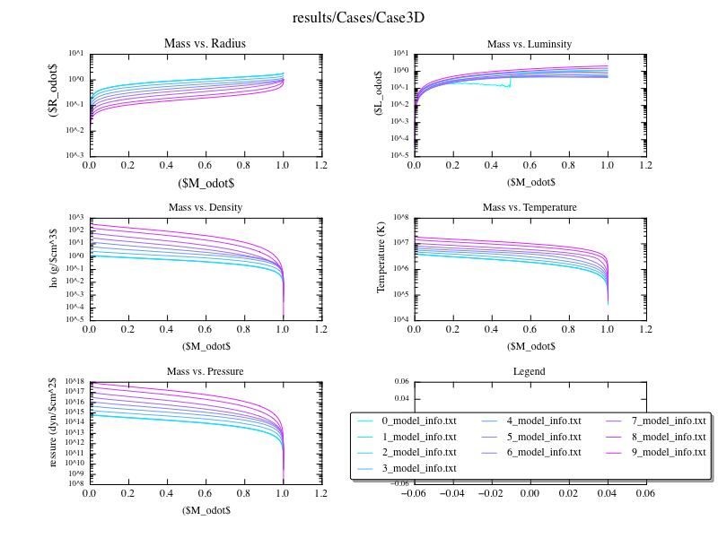

Date
& Time: April 3, 2012
Location:
Campus
Computing
context: Macho Mac:
/Desktop/Research/BodenheimerCode/workingdir/UnalteredCode/
Scripts/Software
created today:
Useful
computer stuff figured out today:
Useful
computer stuff figured out recently:
How
to automatically fill in that '* goes here to indicate convection is
happening at this mass cell' column in all the model files in the
/results/ directory.
file="0_model_info.txt";
cat $file| awk '{if ( match($0,"MODEL") ||
(match($0,"dM") ) ) { } else if ($2 != "*") {$1
= $1 " ."; } else {$1=$1"";}; if (NF >11)
{print $0;}};' >
temp.txt; mv temp.txt $file
A
shell script called 'n' (in /usr/local/bin/. You'll need to use
'sudo' to do anything to the file.) that takes care of the setting
up a growlnotification for any command you run. Use as follows:
If
you get the following error when attempting to use growlnotify:
growlnotify[681:903]
could not find local GrowlApplicationBridgePathway, falling back to
NSDNC
Go
to System Preferences --> Growl --> Stop Growl (then Start
Growl)
From
last time: I copied over a clean version of Peter's code (as
initially modified by Greg to get it to work) from my "backup"
dir in to "UnalteredCode" in my working dir.
If
you want to add a constant numerical value to the names of all the
(numbered) files in a directory, enter the following command at the
unix prompt, when you're within that directory:
ls
*_model_info.txt | sort -r | awk -F'[_]' '{old=$0; n=$1+100;
sub($1,n,$0); print "mv " old " "$0}' | sh
If
you want a simulation to 'pick up' where the results of a previous
one left off, make sure to set MODA = -1 in the .start file
Figured
out how to get the legend on my python-generated figures to have
multiple columns (and thereby fit on the visible portion of the
graph):
legend(prop={'size':8},loc='lower
center', ncol=3, fancybox=True, shadow=True)
Updated
both MyPythonGUIPlottingScript.py and plot_HR_evolution.py to
include this nicer, more legible version of the legend.
To
set a pop-up notification on my desktop that lets me know when one
of these really long thecode.f runs is finished (running in the
background), start the run like this:
It
looks like thecode.f can't handle NRIT values above 1000. Either
that, or it can't figure out how to do mod-arithmatic on NMOD values
above 9999. So, you can't really run the code for 10000 timesteps
and have it write output every 1000 steps. For now, my best work
around is to let the code go for 9500 time steps, and have it write
out model data every 500 steps.
Should
look into this more next time, in thecode.f itself.
Continuing
from last time:
Next
time: test out initial(-ish) conditions that are closer to what I
need for a planet. Specifically:
Same
starting condition that Cases3A/B/C used, with
Crad
= 1
Cwrk
= 1
SMax
= -2e37
Efrac
= 0 (in TheCode.f <-- hard code this change and recompile.
Perhaps name that version of the compiled code something else?)
Next
time: it might be useful to get the fortran code to put out some
information about when/where/how much fusion is turning on within
the star. In particular, it'd be revealing to correlate that info
with models' positions on the HR diagram. (The idea here is to test
my assumption that fusion is turning on at that "elbow" in
the PMS track.)
To
Do/Today:

Figure
2: Case 3D (SMAX = large, negative number, Cwrk and Crad both
on).
Note:
The initial model profile in Figure 2 looks a little uneven. I
should re-run the pmsstar1.start phase of the run, and then start
the Case3D.inp evolution on that 'clean' starting point model.
Also, want to let Case3D evolve forward for a longer amount of time,
to see if it hits the main sequence or what. The energy from fusion
is supposed to be turned off in this compilation of TheCode.f, but
it looks like the star is evolving as if fusion *is* turning on in
its core.
Follow
up: Changed the input file to be outputs/pmsstar1start.mod
It
might be good to go back and run CasesA/B/C forward from
pmsstar1start.mod, too, though I don't think the results are going
to differ vastly.
Simulation
stopped(?) around 1100th timestep with a 'stop invstate' error
message.
Simulation
throws a 'stop invstate' message around the 700th timestep, and the
size of the timesteps decreases steeply thereafter
Results
(HR diagram and internal structure evolution)

Figure
3a: HR diagram evolution of Case3Dsecond, which has Cwrk and
Crad both set to 1, SMAX = -2e37, and run with the Efusion = 0
version of TheCode.f (the 'unaltered' version)

Figure
3b: Internal structural evolution of Case3Dsecond, which has
Cwrk and Crad both set to 1, SMAX = -2e37, and run with the Efusion
= 0 version of TheCode.f (the 'unaltered' version)
I
need to check, somehow, what's going on with the fusion energy
generation rate as a function of time in TheCode.f.
Next
steps: